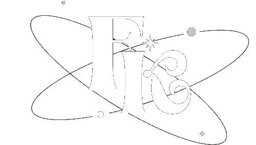

 <ion-toolbar>
  
    <ion-buttons slot="start">
        <ion-menu-button  menu="content"></ion-menu-button>
      </ion-buttons>
    
<div class=" d-flex align-items-center justify-content-center">
  
</div>

<span slot="end">
  <ion-avatar>
    
  </ion-avatar>
</span>
      
</ion-toolbar>

